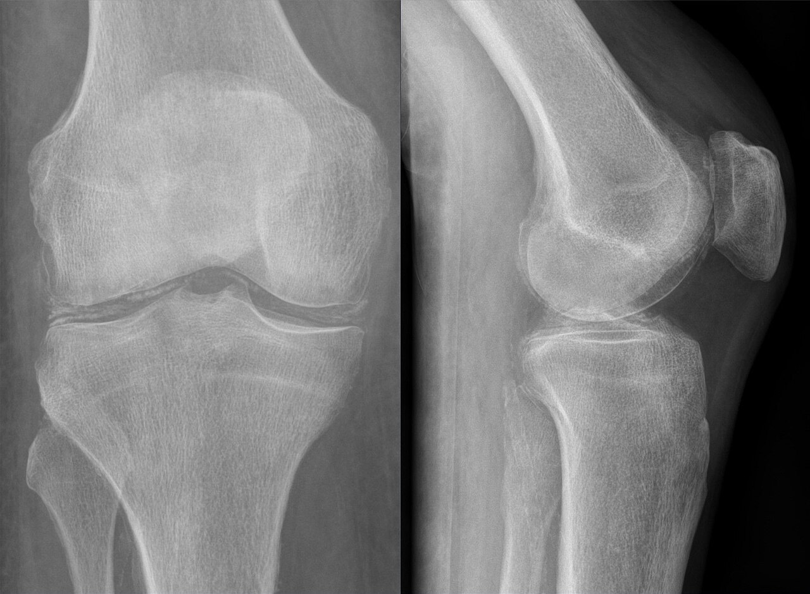

Ficha del catálogo
Condrocalcinosis y artropatía por depósito de pirofosfato
- Sistema
- Óseo
- Modalidad
- RX
- Región
- Rodilla y muñeca
- Dificultad
- Intermedio
El depósito de cristales de pirofosfato cálcico en el cartílago produce calcificaciones visibles en la radiografía y una artropatía degenerativa de distribución atípica. Puede cursar de forma silenciosa, con crisis agudas de artritis que imitan a la gota o con degeneración crónica progresiva. La prevalencia aumenta mucho con la edad y suele ser un hallazgo casual en pacientes mayores. En personas jóvenes obliga a descartar causas metabólicas asociadas.
Técnica
Radiografías de rodillas en carga, muñecas y pelvis, que son las localizaciones donde el depósito se hace visible con mayor facilidad.
Qué observar
- Calcificación lineal de los meniscos, paralela a la superficie articular
- Calcificación del fibrocartílago triangular del carpo
- Calcificación fina y paralela al hueso subcondral en el cartílago hialino
- Calcificación de la sínfisis del pubis y del labrum acetabular
- Artropatía femoropatelar desproporcionada respecto al resto de la rodilla
- Ensanchamiento del espacio entre escafoides y semilunar con colapso del carpo
Hallazgos
Calcificaciones lineales de fibrocartílagos y del cartílago hialino, acompañadas de cambios degenerativos en localizaciones poco habituales para la artrosis común.
Perlas
La combinación de artropatía femoropatelar aislada, afectación de las articulaciones metacarpofalángicas segunda y tercera y calcificación del fibrocartílago triangular es muy sugestiva. En pacientes menores de cincuenta y cinco años conviene investigar alteraciones del metabolismo del calcio y del hierro.
Diagnóstico diferencial
- Artrosis primaria
- Distribución típica en compartimento medial y sin calcificaciones cartilaginosas.
- Artropatía gotosa
- Erosiones con bordes sobresalientes y depósitos de partes blandas sin calcificación lineal.
- Depósito de hidroxiapatita
- Calcificación amorfa periarticular en tendones, no dentro del cartílago.
Simuladores
- Calcificaciones vasculares proyectadas sobre la articulación
- Restos de contraste o material de sutura
- Osificación de inserciones tendinosas
Por modalidad
- RX
- Método más sencillo para demostrar el depósito
- US
- Muestra bandas hiperecoicas dentro del cartílago hialino
- TC
- Detecta calcificaciones pequeñas y afectación del ligamento transverso cervical
Protocolo
Serie de cribado con rodillas, muñecas y pelvis. Ecografía o tomografía cuando la radiografía es dudosa y la sospecha clínica es alta.
Clasificación
Se describen la forma asintomática con calcificación aislada, la artritis aguda por cristales y la artropatía crónica destructiva.
Errores frecuentes
- Ignorar las calcificaciones meniscales como hallazgo sin valor
- No relacionar una artropatía de distribución atípica con depósito de cristales
- Confundir el depósito intracartilaginoso con calcificaciones tendinosas periarticulares

condrocalcinosis pirofosfato cristales menisco fibrocartilago triangular seudogota artropatia